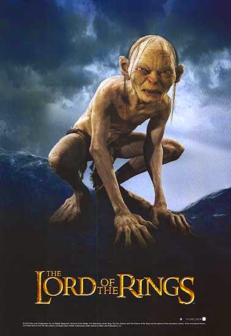

El señor de los anillos
Las tres películas fueron escritas, producidas y dirigidas por Peter Jackson, coescritas por Fran Walsh y Philippa Boyens y distribuidas por New Line Cinema. Considerado como uno de los mayores proyectos cinematográficos alguna vez acometidos, con una recaudación global de más de 2900 millones de dólares,Nota 1 el proyecto completo duró ocho años, con la filmación simultánea de las tres películas y rodadas enteramente en la tierra natal de Jackson, Nueva Zelanda. Aun con algunas variaciones, la trilogía se ciñe en líneas generales a la trama principal de la novela sobre la que se basa. Ambientada en el ficticio mundo de la Tierra Media, sigue las aventuras del hobbit Frodo Bolsón y sus compañeros en su misión de destruir el Anillo Único y asegurar así la aniquilación del Señor Oscuro, Sauron. Sin embargo, esa comunidad se rompe y Frodo continúa la aventura junto a su fiel compañero Sam y el traicionero Gollum. Por otro lado, el mago Gandalf y Aragorn, heredero en el exilio del trono de Gondor, se unen y lideran a los pueblos libres de la Tierra Media durante varias batallas contra las fuerzas del mal.
Desarrollo
La saga de el señor de los anillos son muy importantes para el cine
Conclusión
La trilogía cosechó un gran éxito de taquilla: las películas alcanzaron, respectivamente, los puestos 26.º, 19.º y 6.º entre las más taquilleras de la historia. También fueron aclamadas por la crítica, al obtener un total de diecisiete premios Óscar, diez premios BAFTA y cuatro premios Globo de Oro, así como amplias alabanzas hacia el reparto y las innovaciones en lo referente a efectos especiales digitales. Cada película de la trilogía fue reeditada como versión extendida, lanzada un año después del lanzamiento en DVD de la versión proyectada en las salas de cine.